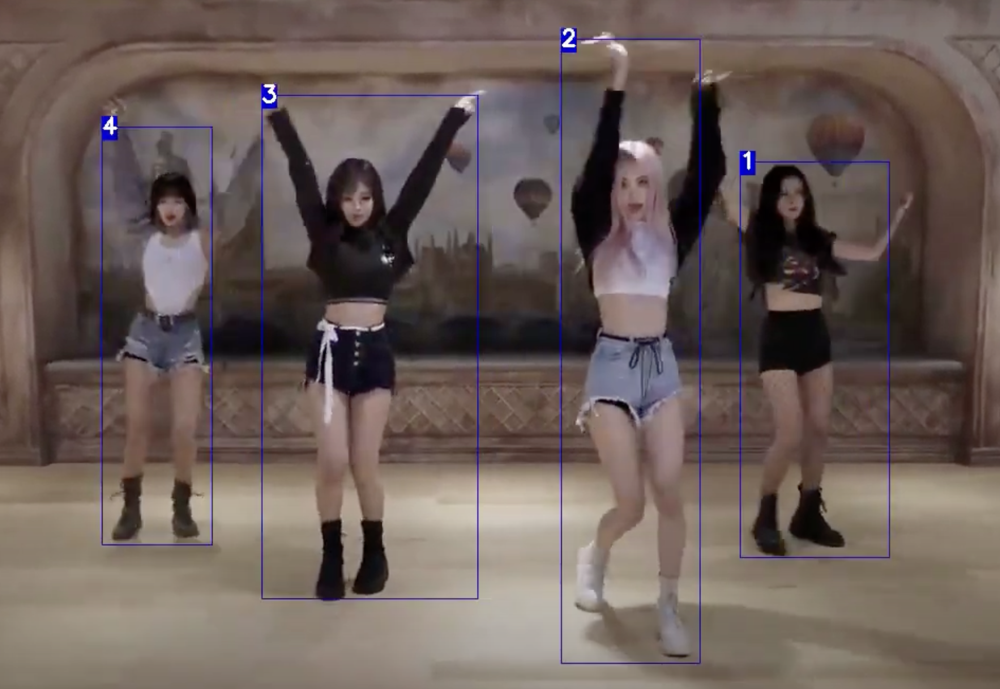
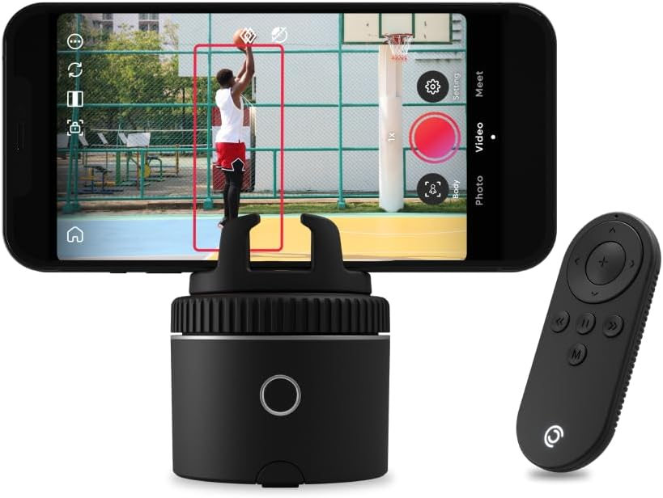

Pivo Tracking
2023-Improving the overall performance of the Pivo tracking algorithm. The algorithm is based on DeepSort and mainly consists of two parts i.e. feature extraction and object detection. After detecting persons in a given frame we perform feature extraction for Person ReID. This information is then fed to the deepsort algorithm.
Currently I am working on improving and optimizing these models. Particularly, I am focusing on model compression by using efficient mobile architectures and optimization techniques like int8 inference, model pruning and so on while maintaining high accuracy. Accuracy is evaluated on separate evaluation datasets and QA test videos. Furthermore, I am also working on extending this project to include Face Tracking System based on AdaFace and Arcface loss.
- Platform
- Unix / iOS / Android
- Stack
- Python, C++, NCNN, TNN, PyTorch, DeepSort, Kubeflow, Docker, GitHub

